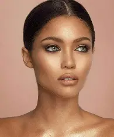

Tentang Proyek
Banyak orang masih kesulitan memilih shade make-up yang cocok
dengan warna kulitnya. Aplikasi ini membantu pengguna menentukan
shade make-up yang sesuai secara otomatis dan real-time
menggunakan kamera atau upload gambar.
Sistem ini memanfaatkan teknik pengolahan citra digital seperti
Gaussian Blur, Fourier Transform, Sobel, Wiener Filter, penambahan
Gaussian Noise, dan segmentasi warna kulit dengan K-Means
Clustering. Semua proses dilakukan langsung di browser tanpa
library image processing khusus.
Dengan aplikasi ini, pengguna bisa mendapatkan rekomendasi shade
make-up yang lebih tepat dan hasil riasan yang natural.
Galeri Warna Kulit & Rekomendasi
Ivory (Putih)
Cocok untuk kulit putih cerah.
Rekomendasi shade:
Ivory.
Beige (Sawo Matang)
Cocok untuk kulit sawo matang.
Rekomendasi shade:
Natural Beige.

Tan (Gelap)
Cocok untuk kulit gelap.
Rekomendasi shade:
Beige.
Seluruh gambar hanya digunakan untuk kebutuhan pendidikan.
Pilih Mode
Upload Gambar Wajah
Aplikasi web untuk klasifikasi warna kulit dan rekomendasi shade make up berbasis pengolahan citra digital secara manual.
Kamera Realtime
Untuk hasil maksimal, pastikan pencahayaan cukup dan wajah terlihat jelas di kamera.
Panduan Penggunaan
- Upload foto wajah melalui tombol atau gunakan kamera langsung.
- Jika menggunakan kamera, pilih kamera yang tersedia lalu klik Aktifkan Kamera. Setelah aktif, klik Ambil 5 Foto.
- Setelah foto muncul di preview, klik Proses Gambar untuk memulai klasifikasi.
- Setiap tahap pengolahan citra (blur, noise, segmentasi, dsb) akan divisualisasikan di bawah.
- Hasil klasifikasi warna kulit dan rekomendasi shade make up akan muncul di bagian bawah.
- Catatan: Pastikan pencahayaan cukup dan wajah terlihat jelas untuk hasil terbaik.